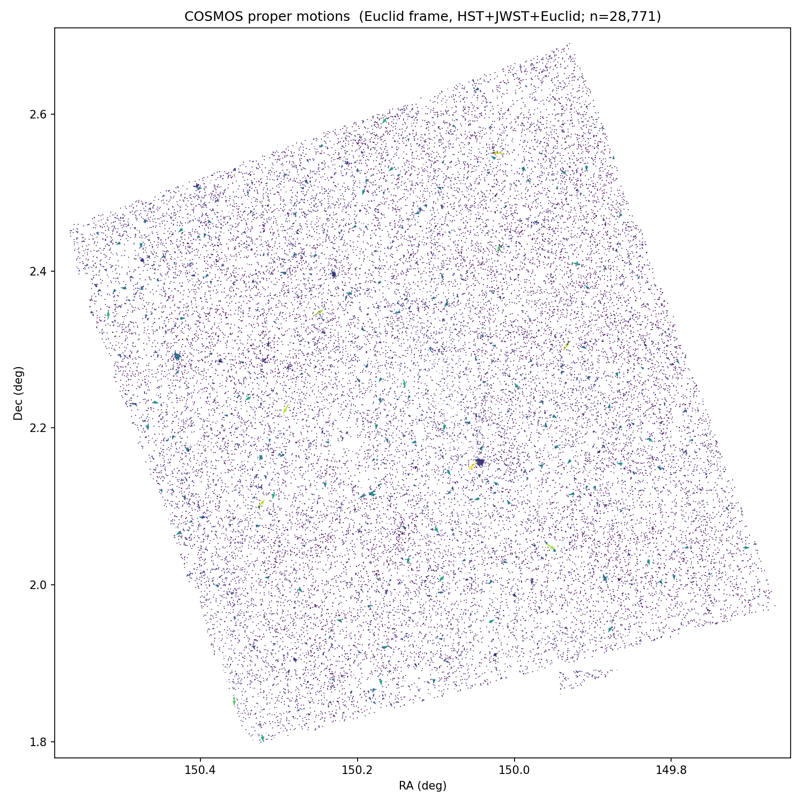
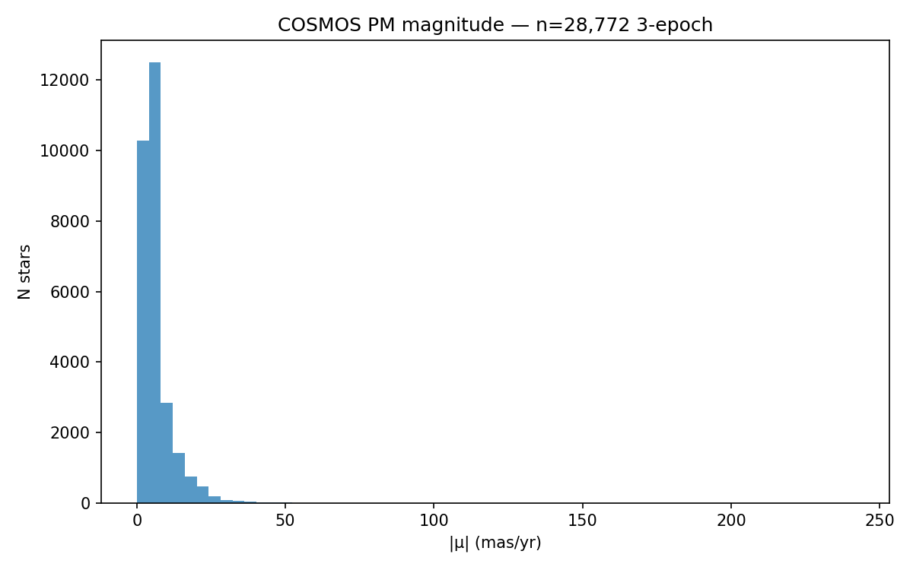
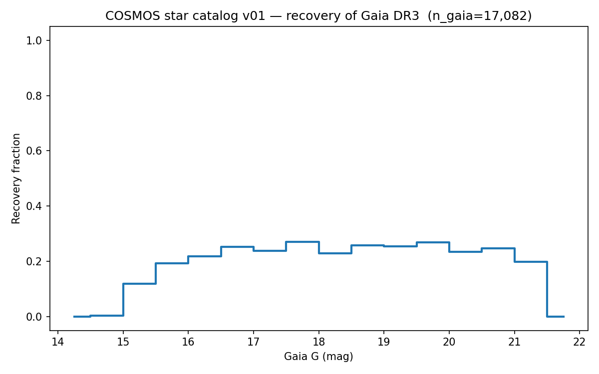
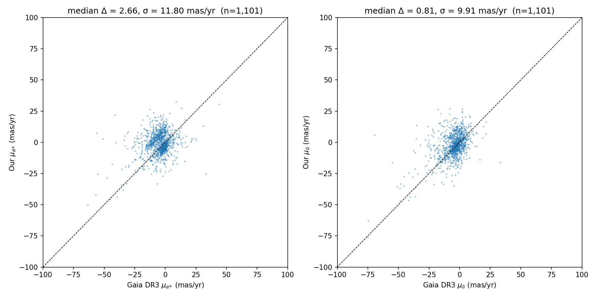
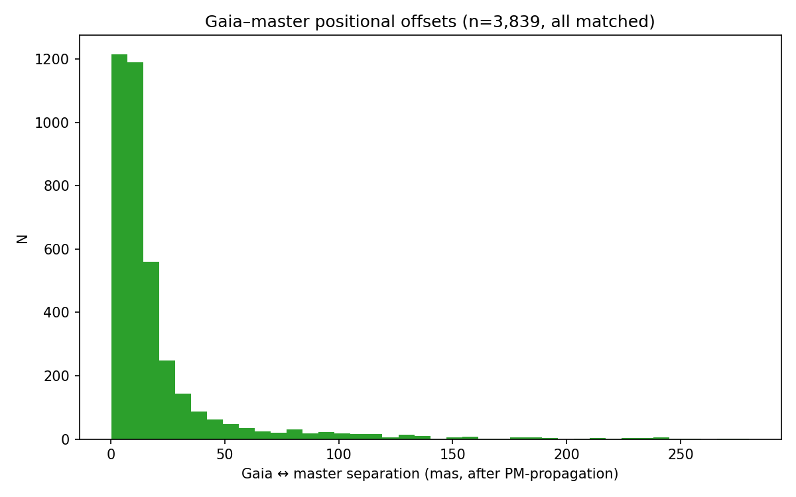
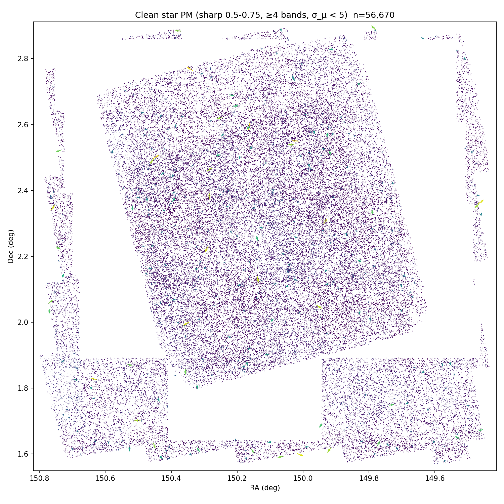
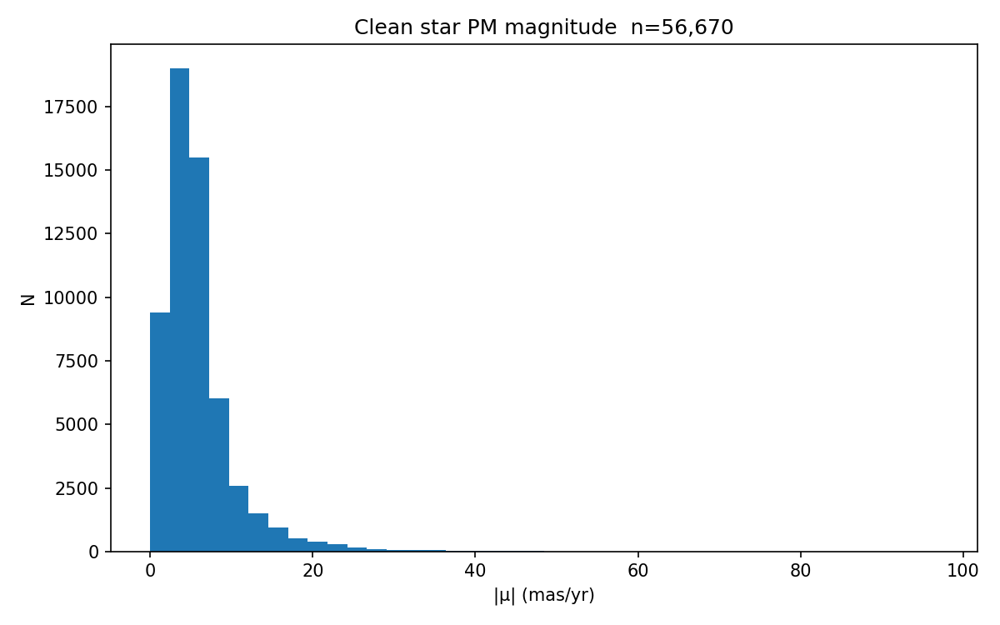

COSMOS star catalog v01
Build: 2026-05-26. Output of programs_star/ pipeline 20–25.
1. Footprints (Step 1)
- F115W: 20 tiles
- F150W: 20 tiles
- F277W: 20 tiles
- F444W: 20 tiles
- F814W: 81 tiles
- NIR-H: 60 tiles
- NIR-J: 60 tiles
- NIR-Y: 60 tiles
- VIS: 60 tiles
Per-star coverage flags (cov_<BAND>, n_cov, has_all_9) in:
csvfiles_star/inputs_with_coverage/star_cosmos2020_v01.csvcsvfiles_star/inputs_with_coverage/star_euclid_v01.csvcsvfiles_star/inputs_with_coverage/star_hst_v01.csvcsvfiles_star/inputs_with_coverage/star_jwst_v01.csv
2. DAO detections (Step 2)
| band | tiles | n DAO srcs | wall t (min) |
|---|
| F115W | 20 | 1,227,621 | 26.7 |
| F150W | 20 | 1,261,850 | 30.8 |
| F277W | 20 | 2,638,668 | 30.3 |
| F444W | 20 | 7,939,277 | 27.7 |
| F814W | 81 | 11,484,337 | 89.3 |
| NIR_H | 60 | 1,951,464 | 11.0 |
| NIR_J | 60 | 1,826,617 | 12.1 |
| NIR_Y | 60 | 2,158,085 | 12.3 |
| VIS | 60 | 2,669,620 | 11.8 |
3. Star classification (Step 3)
| band | n DAO | n good star | n saturated |
|---|
| F814W | 11,484,337 | 730,198 | 3,427 |
| F115W | 1,227,621 | 275,203 | 1 |
| F150W | 1,261,850 | 319,257 | 0 |
| F277W | 2,638,668 | 386,807 | 151 |
| F444W | 7,939,277 | 313,693 | 188 |
| VIS | 2,669,620 | 783,519 | 2 |
| NIR_Y | 2,158,085 | 460,614 | 124 |
| NIR_J | 1,826,617 | 400,354 | 95 |
| NIR_H | 1,951,464 | 524,776 | 72 |
4. Cross-matched pairs (Step 4)
- pairs_HST_Euclid.parquet: 158,962 pairs
- pairs_JWST_Euclid.parquet: 68,699 pairs
- pairs_HST_JWST.parquet: 91,550 pairs
5. Proper motion (Step 5)


Total PM rows: 132,335 3-epoch: 28,772
6. Orphan candidates (Step 6)
→ orphans.html
7. Unified master catalog (27_unified_catalog)
- Total rows: 132,335
- 3-epoch PM (HST + JWST + Euclid): 28,772
- 2-epoch PM: 103,563
- Median |μ| (3-epoch, |μ|<200 mas/yr): 4.96 mas/yr
- Median n_bands_detected: 4.0
Files: csvfiles_star/star_master_v01.parquet (full) / star_master_v01.csv (21-col lite view)
8. Gaia DR3 validation (29_gaia_validation)
- Matched stars: 3,839 (of ~17k Gaia DR3 G<21.5 in COSMOS box)
- 3-epoch comparison: 1,101
- median Δμα* = 2.66, σ = 11.80 mas/yr
- median Δμδ = 0.81, σ = 9.91 mas/yr



9. Clean stellar subset (30_clean_stars)
Tight cuts (sharp 0.5-0.75, ≥4 bands, σ_µ < 5, 2+ epochs): 56,670 stars. Median |µ| = 4.84 mas/yr.
Files: csvfiles_star/clean_stars_v01.parquet + .csv


10. Orphan thumbnails (31_orphan_thumbs)
Top 40 per detection mission, multi-band cutouts. → orphans_thumbs.html
11. Refined orphans (28_pixel_coverage_refine)
After pixel-mask refinement: real_orphan count drops to 1,144,104. File: csvfiles_star/orphans_refined.parquet
Caveats / known v01 limitations
- Footprints are bbox-only. Real JWST chip gaps and rotated-frame corners are not subtracted, so some "orphans" are actually outside actual pixel coverage. Refine with
28_pixel_coverage_refine.py (deferred). - Step 3 morphology cuts (G2-G4 from master CLAUDE.md) are loose (sharp 0.4-0.85). Many compact galaxies are accepted as "good stars". To tighten, raise sharplo or restrict to sharp 0.5-0.75.
- Saturation detector is conservative. Few stars are flagged saturated because we use the brightest non-saturated peak as the threshold reference, which can be unreliable.
- HST F814W has 11.5M DAO raw detections (vs 1.2M for F115W) because of low background and many faint galaxies. Step 3 reduces to 730k good "stars".
- Orphan count (1.3M) is an upper bound. Tightening morphology cuts and using pixel-level masks will bring it down.